به نام خدا
Easytrade2017 team
آموزش استراتژی
با سلام خدمت همه ی دوستان بنده قصد دارم در این وبلاگ استراتژی مربوط به مدیریت مجموعه های اجاره ای و ارتقا عضویت در سایت بینظیرنئوباکس رو آموزش بدم و به شما علت شکست افرادی رو که این سایت رو تجربه کردند رو بگم .
ابتدا یک نگاهی به میزان درآمد شما در عضویت های مختلف طبق گفته ی سایت خواهیم داشت
توضیح مربوط به هر تصویر در زیر تصویر داده شده است .

در تصویر بالا در نظر گرفته شده که شما عضویت فعلی که هستید یعنی استاندارد و 300 مجموعه اجاره ای دارید که هر کدام هر روز 4 کلیک انجام میدهند که این بهترین حالت ممکن هست و رسیدن به چنین حدی نیاز به صبر و حوصله و مدیریت فوق العاده دارد که دور از دسترس نیست در این حالت شما روزی 6 دلار و ماهی 181 دلار درآمد خواهیم و چون هزینه ی تمدید 300 مجموعه در ماه 61 دلار هست در نتیجه 120=61-181 یعنی سود خالص ماهیانه شما 120 دلار هست .
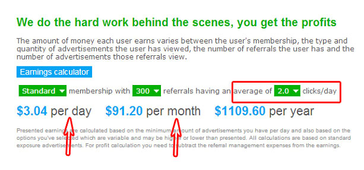در تصویر بالا تمام حالت ها مانند تصویر قبل هست ولی در نظر گرفته شده که هر مجموعه اجاره ای میانگین کلیک 2 را به خود اختصاص دهد یعنی روزی 2 کلیک انجام دهد . در این حالت شما روزی 3 دلار و ماهیانه 91 دلار خواهید داشت و از آنجایی که هزینه ی تمدید 300 مجموعه اجاره ای 61 دلار هست در نتیجه سود خالص شما برابر است با 30=61-91 یعنی ماهی 30 دلار سود خالص خواهید داشت .
موضوع به همین جا ختم نمیشود در ادامه روش هایی رو توضیح خواهم داد که درآمد شما با توجه به اینکه د رحالت عادی اینطور خواهد بود ولی بتوانید سود خالص خود را چند برابر کنید .
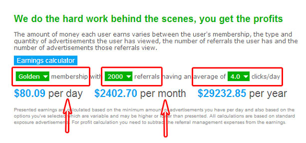در تصویر بالا عضویت گلدن رو بررسی میکنیم که هزینه ی خرید این عضویت 90 دلار خواهد بود و شما که 300 مجموعه اجاره ای داشتید در بهترین حالت ماهی 120 دلار درآمد داشتید یا از اون درآمد این عضویت رو میخرید و اگر ماهیانه 30 دلار درآمد داشتید یا باید 2 ماه دیگه صبر کنید تا 90 دلار به دست بیارید و یا اینکه 60 دلار سرمایه گذاری کنید . در این حالت شما میتونید تا 2000 مجموعه اجاره ای داشته باشید و رسوندن 2000مجموعه اجاره ای به میانگین کلیک 4 در روز زمان بر خواهد ولی درآمد فوق العاده ای داره . در این حالت شما روزی 80 دلار و ماهی 2400 دلار درآمد دارید که هزینه ی تمدید 2000 مجوعه اجاره ای 500 دلار خواهد بود و در این حالت سود خالص شما برابر است با 1900=500-2400 و اگر در این حالت قیمت دلار را 3200 در نظر بگیریم شما ماهیانه 6 میلیون تومان درآمد خواهید داشت . ولی این میزان از درآمد نیاز به صبر داره.
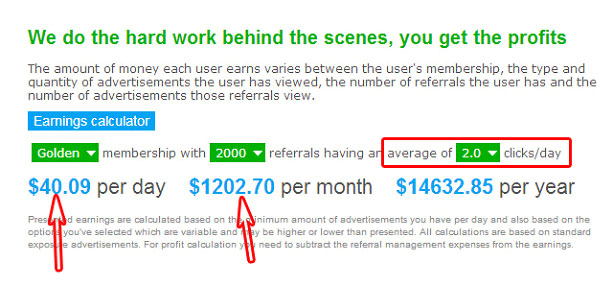در حالت بالا که عموما رایج تر هست در نظر گرفته شده که همه ی حالات مانند قبل ولی میانگین کلیک مجموعه ها 2 در نظر گرفته شده . در این حالت شما با 2000 مجموعه اجاره ای که روزی 2 تبلیغات مشاهده میکنند . روزی 40 دلار و ماهی 1200 دلار درآمد خواهید داشت . و از آنجایی که هزینه یتمدید 2000 مجموعه 500 دلار هستش بنابراین سود خالص شما 700=500-1200 خواهد بود یعنی ماهیانه 2 میلیون و دویست هزار تومان .
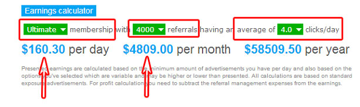در تصویر بالا در نظر گرفته شده که عضویت شما یولتی میت یعنی آخرین عضویت این سایت بینظیر باشه که بنده این عضویت رو خریداری کردم و بیش از 2000 مجموعه اجاره ای دارم و سقف مجموع در این حالت 4000 تاست و اگر مجموعه اجاره ای شما در این حالت 4 کلیک در روز انجام دهند شما روزی 160 دلار و ماهیانه 4800 دلار درآمد خواهید داشت که هزینه تمدید 4000 مجموعه اجاره ای 1000 دلار هستش بنابراین سود خالص شما 3800=1000-4800 خواهد بود یعنی ماهیانه حدود 12 میلیون تومان سود خواهید کرد . رسیدن به این درآمد از نئوباکس ملزم به این هستش که قلق هایی که در ادامه گفته میشه رو کامل اجرا کنید و طبق اونها عمل کنید در تصویر پایین شما عضویت من رو مشاهده میکنید . بنده طبق استراتژی ای که در ادامه میگم پیش رفتم و هر روز به درآمدم اضافه میشه.
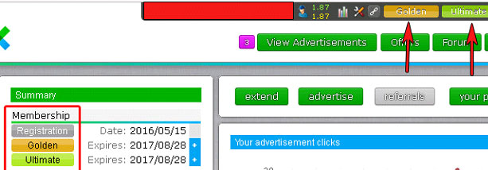تصویر بالا اکانت بنده هستش که به خاطر جلوگیری از هک شدن اکانت مجبور شدم اطلاعات خودم رو نشون ندم ولی همینطور که میبینید بنده عضویت گلدن و یولتی میت رو دارم و به آخرین عضویت نئوباکس رسیدم و میانگین کلیک مجموعه های من برای امروز تا ساعت 4 بعد از ظهر 1.87 هست و تا آخر شب بیشتر خواهد شد . پس پا به پای من پیش بیاید تا شما هم به چنین درآمدی برسید .
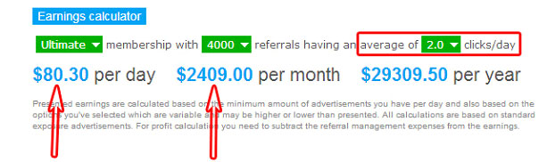در تصویر بالا مانند تصویر قبل توضیح داده شده است با این تفاوت که میانگین کلیک مجموعه شما 2 باشد در این حالت شما روزی 80 دلار و ماهی 2400 دلار درآمد خواهید داشت و اگر هزینه ی تمدید رو از درآمد کسر کنیم . سود خالص شما 1400=1000-2400 خواهد بود و اگر دلار 3200 باشه سود خالص شما 4 میلیون و چهارصد خواهد شد
توضیحات بالا طبق گفته ی سایت بوده و این سوال پیش میاد اگر به این صورت سایت نئوباکس سود ده هستش پس چرا خیلی ها فکر میکنند سایت نئوباکس کلاهبرداره و از ادامه فعالیت در نئوباکس پشیمان میشند. به موقعش علت این موضوع رو هم خواهم گفت و نکته ای رو که باعث میشه کسی موفق باشه و فرد دیگری شکست بخوره توضیح خواهم داد.
قیمت زیرمجموعه های اجاره ای :
در وبلاگی که برای شما عزیزان ارسال شده بود نحوه ی خرید مجموعه های اجاره ای به مدت 30 روز رو آموزش دادیم بدین صورت که باید بر رویreferrals کلیک میکردید و بسته ی مورد نظر خودتون رو انتخاب میکردید . و حالا قیمت مجموعه های اجاره ای برای سی روز :
طبق جدول بالا از 250-0 مجموعه قیمت 0.20$ خواهد بود یعنی اگر قصد خرید 150 زیرمجموعه اجاره ای برای سی روز رو دارید باید 150 رو ضرب در 0.20 بکنید که میشه 30 دلار یعنی برای 150 مجموعه اجاره ای 30 دلار باید هزینه کرد و یک مثال دیگه میزنم و این بحث رو جمع میکنم اگر دقت کنید اگر شما مثلا از قبل 750 مجموعه داشتید و میخواین بیشتر بخرید توی گروه 1000-751 قرار میگیرید و در این حالت قیمت هر رفرال 0.23$ خواهد بود و اگر قصد خرید 100 مجموعه رو دارید باید 100 ضرب در 0.23$ بشه که میشه 23 دلار .
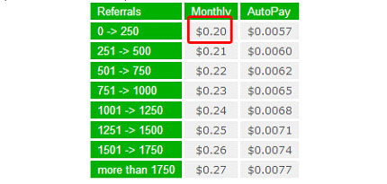وقتی که سقف حالت استاندارد رو زدید یعنی 300 رفرال داشتید که همه هم برای شما خوب کار میکنند یعنی تبلیغات رو میبینند و فعال هستند اگر به همین درآمد قانع بودید که در همین حالت می مونید و ارتقا عضویت نمیدید ولی اگر قصد ارتقا عضویت رو دارید باید بر روی upgrade کلیک کنید . همونطور که میبینید قیمت خرید اکانت گلدن اون هم برای یکسال فقط 90 دلار هستش که شما برای خرید اون لازم نیست کاری کنید و صرافی ای که بهتون معرفی میکنیم اینکار رو میکنه شما مبلغ رو به تومان به حساب صرافی میفرستید و اون اکانت برای شما میخره . و چون قبل از اون 300 مجموعه اجاره ای داشتید و ماهیانه از 120-30 دلار درآمد خالص دارید بنا به درآمد خودتون این اکانت رو میخرید و اگر پول کافی نداشتید یا باید صبر کنید تا پول کفی رو به دست بیارید توسط مجموعه و یا باید سرمایه گذاری کنید .
عضویت های مختلف سایت نئوباکس :
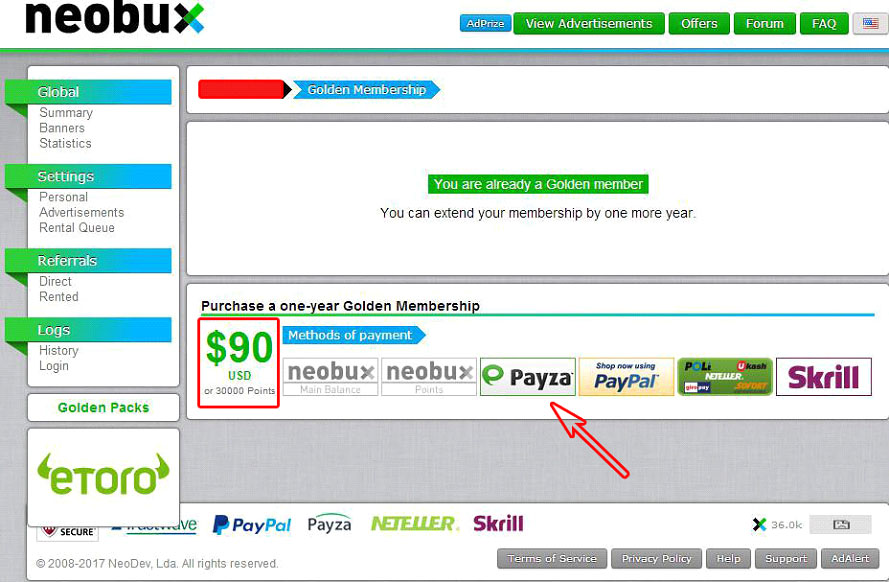در تصویر بالا توضیحات مختلفی داده شده برای عضویت های مختلف که من فقط به نکات ضروری و مهم اون از بالا اشاره میکنم. این عضویت ها شامل عضویت استاندارد و گلدن نیست . در استراتژی این سایت در ادامه توضیح میدم . بنده خودم بعد از خرید اکانت گلدن و رسیدن به 2000 مجموعه اجاره ای مستقیما اکانت نهایی یعنی یولتی میت رو خریدم . و نیازی به خرید عضویت های دیگه نبوده و از نظر من اضافه هزینه کردن هستش . Inactivity Days Free Replacement : امتیاز به صورت خودکار و رایگان بازیافت کردن مجموعه اجاره ای به افرادی که ارتقا عضویت میدند تعلق میگیره در صورتی که شما هر کدوم از عضویت های بالا رو داشته باشید و دارای مجموعه ی غیر فعال باشید سایت به صورت خودکار بدون هزینه ای برای شما بازیافت میکنه . این از مزایای ارتقا عضویت هستش .مثلا در عضویت یولتی میت اگر دقت کنید نوشته Days 7 این یعنی اگر مجموعه ی شما تا هفت روز فعال نباشه برای شما رایگان بازیافت میکنه .و بقیه هم به همین ترتیب هستش. Rental Waiting Days : این یعنی مدت زمانی که بعد از خرید مجموعه باید صبر کنید تا بتونید دوباره مجموعه بخرید . الان در اکانت یولتی میت نوشته شده 4 Days یعنی اگر من امروز مجموعه خریدم 4 روز بعد دوباره میتونم مجموعه بخرم و نه زودتر. بقیه ی عضویت ها با توجه به عددی که نوشته به همین صورت هستش . Days Between Cashouts : روزهای که باید صبر کرد تا برداشت بعدی رو انجام بدیم . به فرض مثال در اکانت یولتی میت یعنی آخرین اکانت نوشته 1 Days یعنی شما هر 24 ساعت میتونید برداشت کنید و محدودیتی هم برای برداشت وجود ندارد . Maximum Limit To Rent Referrals : این یعنی حداکثر مجموعه اجاره ای که در هر عضویت میتونید داشته باشید . که برای یولتی میت 4000 تا و برای بقیه کمتر هستش . در پایین هم قیمت خرید هر عضویت برای یکسال نوشته شده . دقت کنید تا اکانت گلدن رو نخرید نئوباکس به شما اجازه ی خرید بقیه ی عضویت ها رو نمیده . یعنی اول خرید اکانت گلدن بعد هر اکانتی که دوست داشتید .
مزایای ارتقا عضویت :
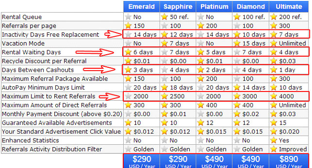در تصویر بالا سمت چپ نوشته شده کمیسیونی که از بازدید تبلیغات از طرف مجموعه های اجاره ای دریافت میکنید . شما وقتی کمیسیون دریافت میکنید که مجموعه های اجاره ای شما تبلیغات نارنجی رنگ که تاکید زیادی در وبلاگ قبلی داشتم رو بازدید کنند یعنی همون Fixed Advertisements و شما هم وقتی از مجموعه های اجاره ای خودتون سود میگیرید که تبلیغات نارنجی رنگ رو دیده باشید پس الویت بازدید از تبلیغات با تبلیغات نارنجی رنگ هستش . و حالا میرسیم به کمیسیون . شما در حالت استاندارد از مجموعه های اجاره ای به ازای هر کلیک 0.005$ و به محض اینکه ارتقا عضویت میدید 0.01$ پول میگیرید یعنی دو برابر سود میکنید و این از مزایای ارتقا عضویت هستش . و درست همینجاست که با توجه به این همه مزایایی که از طرف نئوباکس دریافت میشه خیلی از افراد شکست میخورند و سرمایشون رو از دست میدن البته اونها تقصیری ندارند بلکه یه نکته ای رو در نظر نگرفتن . با ارتقا عضویت شما از طرف سایت نئوباکس برای مجموعه های شما فیلترینگ کلیک اعمال میشه یعنی اگر در حالت استاندارد میانگین کلیک مجموعه های 4 بود با ارتقا عضویت این میانگین کلیک به عدد 2 میرسه . و این رو هم بگم اینکار نئوباکس کاملا منطقی و درست هست . ببینید درسته که فیلترینگ اعمال میشه ولی از اون طرف سودی که از هر کلیک میگیرید 2 برابر شده و شما نباید گول میانگین کلیک رو بخورید . و این علت شکست کابران نئوباکس هست در ادامه قلقی رو به شما یاد میدیم که در این شرایط سود خیلی بیشتری بگیرید . برای اینکه از این شرایط بهترین استفاده رو ببرید و سود فوق العاده ای رو به دست بیارید باید حتما حتما به اجاره مداوم یا خرید مداوم مجموعه های اجاره ای ادامه بدید البته این شامل حالت استاندارد نمیشه . و در ادامه استراتژی حالت استاندارد و گلدن و یولتی میت رو توضیح میدم. نکته ی بسیار مهمی که باید رعایت بشه استراتژی بازیافت مجموعه های اجاره ای در عضویت های مختلف هستش .
آموزش کار با فضای مجموعه های اجاره ای :
بعد از اینکه مجموعه اجاره کردید و ما فرض میکنیم که مثلا 30 تا مجموعه اجاره کردید در قسمت Rented کنار عدد 30 علامت < وجود دارد که با کلیک کردن بر روی این گزینه طبق تصویر وارد محیط مجموعه های اجاره ای خود میشوید .
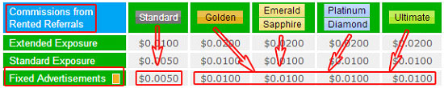سه گزینه ای در کادر مستطیل قرار دادم کار اصلی ما با اون سه تاست . Avg و Last click و Next payment . ابتدا هر یک رو توضیح و به بررسی کار کردن باهاش می پردازیم . Avg : یعنی میانگین کلیک مجموعه های اجاره ای . به شماره های سمت چپ که از یک عدد یک میشه دقت کنید که هر شماره یک مجموعه هستش . پس آوراژ یا Avg رو توضیح دادم . Last click : یعنی آخرین کلیک که منظور همان آخرین فعالیت مجموعه موردنظر هستش که فرض کنید اگر مجموعه شما امروز کلیک کرد با Today و اگر دیروز کلیک کرد yesterday و اگر 2 روز از آخرین فعالیت اون گذشت با 2 days و بعضا ممکنه آخرین فعالیت رو با تاریخ نشون بدن و اصرار ما به تنظیم تاریخ کامپیوتر به میلادی به همین منظور هستش . Next payment : یعنی پرداخت بعدی شما برای تمدید و یا بازیافت مجموعه رو نشون میده . و این یعنی مدت زمان اعتبار مجموعه شما . فرض کنید اگر در این قسمت نوشته 27 days یعنی 27 روز دیگه اعتبار این مجموعه به اتمام میرسه و باید نسبت به تمدید یا بازیافتش اقدام کنید.
در گوشه های سمت راست مربع های کوچکی وجود داره که من داخل سه تاشون رو تیک زدم اگر قصد دارید مجموعه ی فعالی رو تمدید و یا مجموعه ی غیرفعالی رو بازیافت کنید ابتدا باید تیک مربوط به مجموعه ی مورد نظر رو بزنید و فرض کنید ما میخواین این سه مجموعه رو تمدید یا بازیافت کنیم . بعد از اینکه مجموعه های مورد نظر رو انتخاب کردیم به پایین صفحه میریم
که طبق تصویر زیر می باشد .
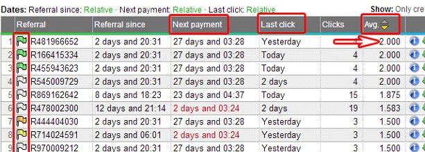در قسمتی که با فلش اشاره شده گفته شده که شما قصد دارید با مجموعه هایی که انتخاب کردید منظور همان مجموعه هایی هستش که تیک مربع اونها رو زدیم چیکار کنید؟ که شما هر قصدی دارید اعم از تمدید و یا بازیافت مجموعه ابتدا بر روی فلشی که داخل مربع قرار گرفته کلیک کنید .
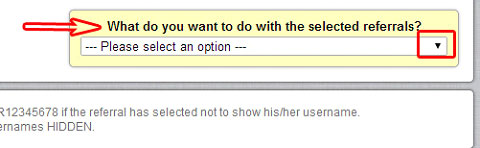در تصویر بالا شما گزینه های متفاوتی رو میبینید اونجایی که نوشته I want to recycle them یعنی شما با کلیک بر روی این گزینه میخواین اونا رو بازیافت کنید . از گزینه ای که در بالا گفتم به پایین که اعداد 15 و 30 و 60 و ..... تا 240 رو میبینید اینها مربوط به تمدید مجموعه انتخابی هستش که اگر از 30 روز به بعد بخواین تمدید کنید شامل تخفیفات فوق العاده ای میشید . آخرین گزینه هم مربوط به پرچم گذاری مجموعه هستش . پس حالا فرض کنید من میخوام یک مجموعه رو بازیافت کنم . که اگر من بر روی نوشته ی بازیافت یعنی I want to recycle them کلیک کنم تصویر زیر رو میبینید .
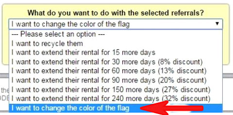فرض میکنیم مجموعه رو بازیافت کنیم و یا اینکه تمدید کنیم که بنا به تصمیم خودتون میتونید اون رو با فلش به سمت پایین تغییر بدید . گفته شده برای بازیافت یا باید از حساب درآمد 0.07$ هزینه کنیم یا اینکه 93 پوینت صرف اینکار کنیم و تاکیدی که داشتم ملزم براینکه اول تبلیغات نارنجی و بعد بقیه ی تبلیغات ها فقط برای به دست آوردن پوینت بیشتر هستش . فرض کنید من با استفاده از حساب درآمد میخوام مجموعه رو بازیافت کنم کافیه که Main Balance رو انتخاب کنم و بعد بر روی Click here to confirm بزنم تا مجموعه بازیافت بشه .
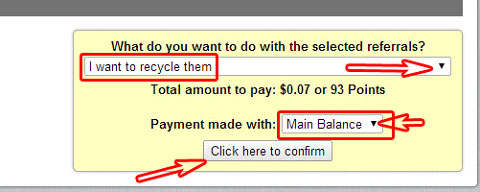تصویر بالا هم فرض شده با پوینت بازیافت انجام بشه . با پوینت میشه مجموعه رو هم تمدید کرد ولی پوینت زیادی به کار میبره .
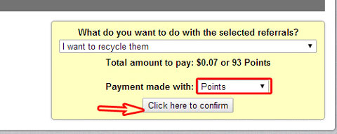اگر عملیات موفقیت آمیز باشد در بالا عمل شما هر چی که باشه اعم از تمدید یا بازیافت گفته میشه الان من یک نفر رو بازیافت کردم و گفته شما یک نفر رو بازیافت کردید .
استراتژی سایت نئوباکس :
ابتدا قوانینی که شما باید در عضویت های مختلف رعایت کنید رو میگم و بعد میگم خودم چه استراتژی ای رو به کار بردم و چیکار کردم .
کنترل بازیافت ها
- 1. بازیافت روزانه ای که برای مجموعه های غیر فعال به کار میبرید حداکثر باید 2 درصد باشید یعنی به ازای هر 100 نفر مجموعه اجاره ای 2 عضو غیر فعال در روز بازیافت کنید .
- 2. به هیچ وجه از 2 درصد بیشتر بازیافت نکنید .
- 3. طبق فرمول زیر بازیافت کنید و لاغیر .
- 4. مجموعه هایی که Next payment آن ها 7Days است به هیچ وجه از فرمول های زیر برای بازیافت استفاده نکنید اگر فعال بود وقتی Next Payment آنها 3 الی 4 روز شد تمدید و در غیر اینصورت اجازه بدید مهلت آنها به پایان برسه.
بازیافت در حالت استاندارد :
- 1. اگر Avg مجموعه ای 1.3 بود بازیافت کنید چون ضرر میده .
- 2. اگر Avg مجموعه ای 1.5 بود و last click اون 4 روز بود یعنی تا 4 روز غیر فعال بود و فعالیتی نداشت بازیافت کنید .
- 3. اگر Avg مجموعه ای 1.6 بود و last click اون 6 روز بود یعنی تا 6 روز غیر غعال بود و فعالیتی نداشت بازیافت کنید .
- 4. اگر Avg مجموعه ای 1.8 بود و last click اون 8 روز بود یعنی تا 8 روز غیر فعال بود و فعالیتی نداشت بازیافت کنید
بقیه ی مجموعه هایی که Avg بالاتر 1.8 دارند رو با هر last click که بود بازیافت نکنید و کمتر از 1.3 رو هم بازیافت نکنید و اجازه بدید مدت زمان اعتبارشون تموم بشه یعنی Next payment اونها صفر بشه
بازیافت در حالت گلدن( golden ) :
- 1. اگر Avg مجموعه ای 0.7 بود باید بازیافت بشه چون ضرر میده .
- 2. اگر Avg مجموعه ای 0.8 بود و last click اون 3 روز بود یعنی تا 3 روز غیرفعال بود و فعالیتی نداشت بازیافت کنید .
- 3. اگر Avg مجموعه ای 0.9 بود و last click اون 4 روز بود یعنی تا 4 روز غیرفعال بود و فعالیتی نداشت بازیافت کنید .
- 4. اگر Avg مجموعه ای 1.1 بود و last click اون 6 روز بود یعنی تا 6 روز غیرفعال بود و فعالیتی نداشت بازیافت کنید .
- 5. اگر Avg مجموعه ای 1.3 بود و last click اون 8 روز بود یعنی تا 8 روز غیرفعال بود و فعالیتی نداشت بازیافت کنید
بقیه ی مجموعه هایی که Avg بالایی دارند رو تمدید کنید و با بقیه ی رفرال های کم کار کاری نداشته باشید تو اتوماتیک وار حذف بشند .
بازیافت در پلن یولتی میت ( Ultimate ) :
- 1. اگر Avg مجموعه ای 0.6 بود باید بازیافت شود
- 2. اگر Avg مجموعه ای 0.8 بود و last click اون 3 روز بود یعنی تا 3 روز غیرفعال بود و فعالیتی نداشت بازیافت کنید .
- 3. اگر Avg مجموعه ای 1 بود و last click اون 4 روز بود یعنی تا 4 روز غیر فعال بود و فعالیتی نداشت بازیافت کنید .
بقیه ی مجموعه های کم کار توسط نئوباکس هر روز بازیافت میشوند .
بنابراین کسانی که Avg بالاتری دارند را حتما تمدید کنید و مجموعه هایی که Avg پایینی دارند طبق فرمول های بالا بازیافت کنید . و همیشه یک زمان برای Next payment در نظر بگیرید مثلا اگر 3 days بود تصمیم بگیرید باید تمدید شود یا به صورت اتوماتیک حذف شود و دیگر این قبیل مجموعه ها رو بازیافت نکنید .
بهترین استراتژی :
تصویر زیر اکانت من هستش که توضیحات کار رو میگم.
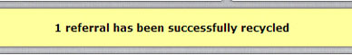این تصویر اکانت من وقتی حالت استاندارد داشتم بود من طبق قانون بالا که براتون گفتم مجموعه های غیرفعال رو بازیافت رو فعال ها رو تمدید کردم و همینطور که میبینید Avg فوق العاده ای داشتم و اگر به Next payment دقت کنید اونها رو به مدت 240 روز و 150 روز تمدید کردم و علت اینکارم رو هم میگم . بنده با همین قلق های بازیافت که گفتم در حالت استاندارد ماهی 160 دلار سود خاص داشتم . به تصویر زیر دقت کنید.
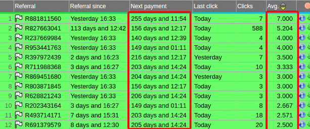به تصویر بالا دقت کنید درصدهای گفته شده تخفیفاتی هست که سایت به ازای تمدید دراز مدت به شما میده . برای 30 روز 5 درصد و برای 150 روز 25 درصد و برای 240 روز 30 درصد تخفیف میده .و اینها رمز موفقیت در نئوباکس هستش .
پس بهترین کار تمدید دراز مدت به دلیل تخفیفات فوق العاده ای که داره
در ابتدای کار تمدید و فعالیت به این شکل دشوار هست مخصوصا اگر بدون سرمایه باشه و برای من هم که بدون سرمایه پیش رفتم طول کشید تا به چنین برسم . شما که قصد فعالیت بدون سرمایه رو دارید ابتدا به مدت 15 روز تا 20 روز تمام تبلیغات نئوباکس رو مشاهده کنید و حتی یک تبلیغ رو هم از دست ندید تا 0.6 دلار تا 1 دلار به دست میارید بعد باهاش 3 تا 5 دلار به دست میارید و چون در حالت استاندارد هر روز میتونید مجموعه بخرید اول از بسته های سه تایی شروع کنید و کم کم بسته های بیشتری بگیرید تا سود بیشتری نصیب شما بشه و نکته ای نباید فراموش بشه اینه که خرید مداوم مجموعه باعث نشه کل حساب main balance خالی بشه و به فرض اگر Next payment یک بسته ی شما 2 days بود پولی نباشه که تمدید کنید پس حواستون به این قضیه باشه و سعی کنید اگر برای شما مقدور هستش سرمایه گذاری کم کنید که برای خرید مجموعه 3 الی 5 , 15 تا 20 روز معطل نشید با 20 دلار سرمایه گذاری میتونید 100 مجموعه ی اجاره ای داشته باشید و با این 100 تا میتونید خیلی زود سقف حالت استاندارد رو بزنید یعنی به 300 تا برسید . بعد از اینکه سقف زدید بجای برداشت پول سعی کنید ازسودش برای تمدید طولانی مدت مثل 60 و 90 روز استفاده کنید با اینکار تخفیف میگیرید و سود خالص شما بیشتر میشه . و اگر خواستید کل 300 تا رو یکجا بخرید هزینش 60 دلار هستش و من توصیه میکنم از سرمایه گذاری خیلی کم شروع کنید در حدی که معطل اون 20 روز نشید شروع کنید و بعد که 300 تا کامل شد با غربال گیری که بهتون بالا یاد دادم سعی کنید مجموعه های یکدست داشته باشید و استراتژی ای هم باید در حالت گلدن به بعد داشت اینه که مداوم مجموعه خرید و طبق فرمول بالا مجموعه های ضعیف رو بازیافت کرد و به عبارتی غربال گیری کنید و بازم توصیه میکنم در شروع کار فقط فقط به ازای هر 100 نفر روزی 2 نفر رو بازیافت کردن رو فراموش نکنید . دوستان اصل فرمول های بازیافت بود که در اختیار شما قرار دادم و این توضیحات راهنمایی ای کلی و روند فعالیت در نئوباکس بوده . یقین داشته باشید با انجام دقیق فرمول های بازیافت و صبر در اینکار به موفقیت چشمگیری دست پیدا میکنید و درآمد فوق العاده ای خواهید داشت . آموزش برداشت وجه(درآمدتون) و انتقال اون به حساب بانکی در ایران در فایلی جداگانه توضیح داده شده است جهت تهیه پکیج آموزش برداشت خیلی سریع اقدام کنید چراکه برای رشد سریع تر توی این سیستم بینظیر بهش احتیاج دارید (بدون پیکج دوم درصد موفقیت خیلی پایین میاد) .
در صورت نیاز داشتن به راهنمایی در طول مسیر و برخورد به مشکل به آیدی تلگرام مراجعه کنید تا راهنمایی لازم به عمل بیاید . و تاکید میکنم به مطالب این وبلاگ کامل تسلط داشته باشید چون جواب سوال بسیاری از در وبلاگ هست و ما از توضیحات اضافه خودداری کردیم .
پیروز و سربلند باشید .